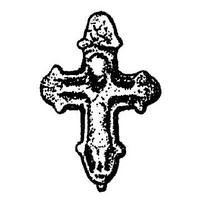
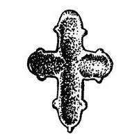

Catalog › CE-0550 · MLY-1
Valva superioară a unui encolpion, Mlînov
sec. XI – mijlocul sec. XIII (1001–1250) · Mlînov, regiunea Rivne, Ucraina
single valve of a reliquary cross; c. XI – mijlocul sec. XIII (1001–1250); found at Mlînov, regiunea Rivne, Ucraina.




Identificare
- Categorie
- Valvă izolată
- Tehnică
- Turnare în relief
- Stare
- Fragmentară
- Dimensiuni
- Î 36 × L 26 × Gr 2 mm
Iconografie
- Descriere avers
- Se păstrează doar jumătatea superioară a unui encolpion pliant cu patru brațe, cu imagine în relief puternic ștearsă. Cruce mică, alungită pe verticală, cu capetele brațelor rotunjite; la baza brațelor mici proeminențe circulare, «lacrimi». Răstignirea în centru, în relief puțin adânc; capul ușor înclinat spre dreapta; brațele cu palme disproporționat de mari și desfăcute, întinse orizontal; picioarele pe un suport; trupul acoperit până la genunchi de o mantie. Deasupra capului, în terminația semicirculară a brațului de sus, urme ale unui semn sau ale unei litere.
- Descriere revers
- Pe verso, adâncituri semioval puțin adânci, folosite la păstrarea relicvelor când cele două jumătăți erau asamblate.
Datare și atribuire
- Datare
- sec. XI – mijlocul sec. XIII (1001–1250)
- Tipologie
- Grupa encolpioanelor în relief, tip răspândit (cruci mici)
Descoperire
- Localitate
- Mlînov
- Regiune
- regiunea Rivne
- Țară
- Ucraina
- Context
- Descoperire izolată
- Coordonate
- 50.5119° N, 25.6126° E
- Precizia locului
- Doar localitatea
Păstrare și referințe
- Bibliografie
- В. Конопля, В. Петегирич, Енколпіон із Млинова, în „Матеріали і дослідження з археології Прикарпаття і Волині”, 10, 2006, p. 231–232 [Конопля, Петегирич 2006], p. 231, Рис. 1, 1, reprodusă la Рис. 1, 1 (p. 231).
- Figura
- Рис. 1, 1
- Planșe
- Конопля, Петегирич 2006, p. 231
- Analogii
- Encolpion foarte asemănător ca dimensiuni și imagine de la Tustan (Рожко 1996, fig. 113); o imagine analogă pe una din crucile mici de la Halici (Пастернак 1998, fig. 69, 2); piese similare la Trepcea lângă Sanok (Ginalski 1999–2000, p. 232–233; 2001, p. 361), la Gródek nad Bugiem (Kokowscy 1997, p. 287–288), la Zvenîhorod și Terebovlea; aproape o copie a valvei superioare la Novgorod, săpătura Nerevski 1954, datată sfârșitul sec. XI – începutul sec. XII (Корзухина, Пескова 2003, p. 133).
- Observații
- Descoperire întâmplătoare, fără context arheologic, la 1,5 km sud-est de cetatea Muravița (menționată în cronică în 1149); piesa a fost predată unui muzeu (nenumit în sursă) de Evghenii Tarasiuk. Locul unde era prinsă urechea este șlefuit îngrijit. Înălțime 36 mm, 37,5 mm cu fixarea parțial păstrată; brațul orizontal 26 mm; lățimea brațelor 5,5–6,5 mm; grosimea 1,5–2 mm. Datarea este dificilă; autorii notează că astfel de cruci circulă mai ales în sec. XII, cu posibilă apariție în a doua jumătate a sec. XI, și leagă posibil piesa de cetatea Muravița (sec. XI – mijlocul sec. XII); datarea din câmpul «datare» este cea din rezumatul în engleză. Autorii admit că valva inferioară pierdută avea Maica Domnului cu palmele deschise (tip Assunta). Sursa menționează peste 20 de localități din Volânia cu encolpioane (cele mai mari colecții la Cerven, Volîn, Dorohobuj, Dorohicin și Vladimir), fără descrieri individuale; ele nu sunt incluse. Coordonate: ale localității (aproximative), nu date în sursă.
Citare: Corpus Encolpiorum, CE-0550, Valva superioară a unui encolpion, Mlînov, --root/piese/MLY-1/ (accesat 2026-10-17).